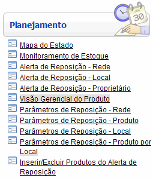
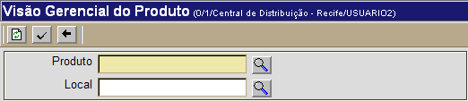

Visão Gerencial do Produto [ Voltar ]Utilize esta tela para acessar informações detalhadas do produto, como posição de estoque atual, indicadores de reposição, compras, consumo, movimentação e demanda. O formulário "Visão Gerencial do Produto" encontra-se dentro do menu "Planejamento". 
Ao clicar no formulário, o sistema exibirá a seguinte tela: 
1º Passo: informe o código e local do produto para o qual deseja gerar a visão gerencial. O campo "Produto" é obrigatório.
Observação: para informações detalhadas recursos e funcionalidades da pesquisa, favor ver o manual Introdução ao Sistema.
2º Passo: clique no botão |
 [Procurar]
para selecionar o produto a partir de uma lista contendo todos os produtos
cadastrados.
[Procurar]
para selecionar o produto a partir de uma lista contendo todos os produtos
cadastrados.